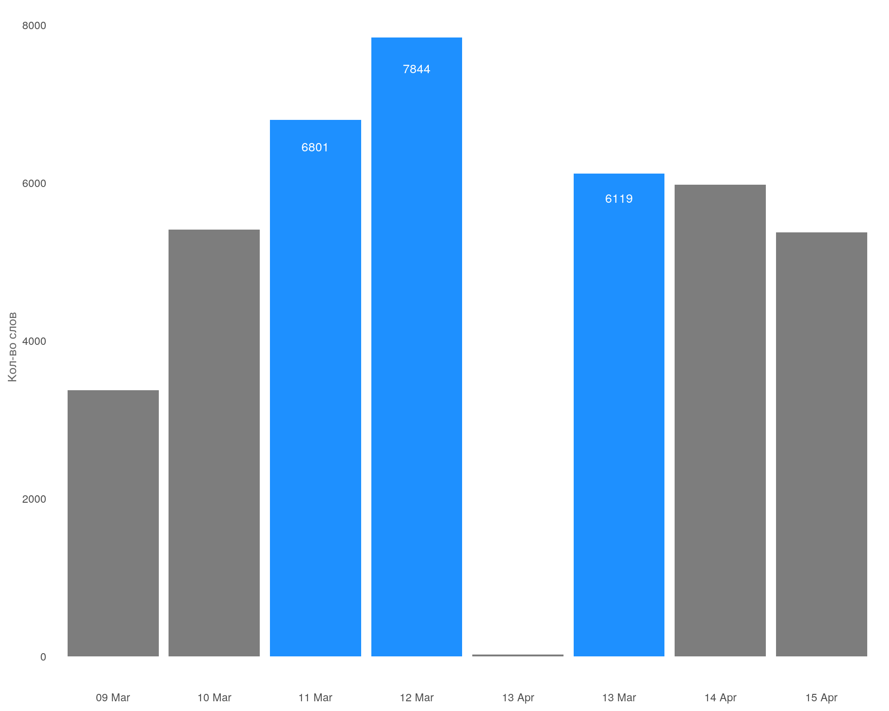
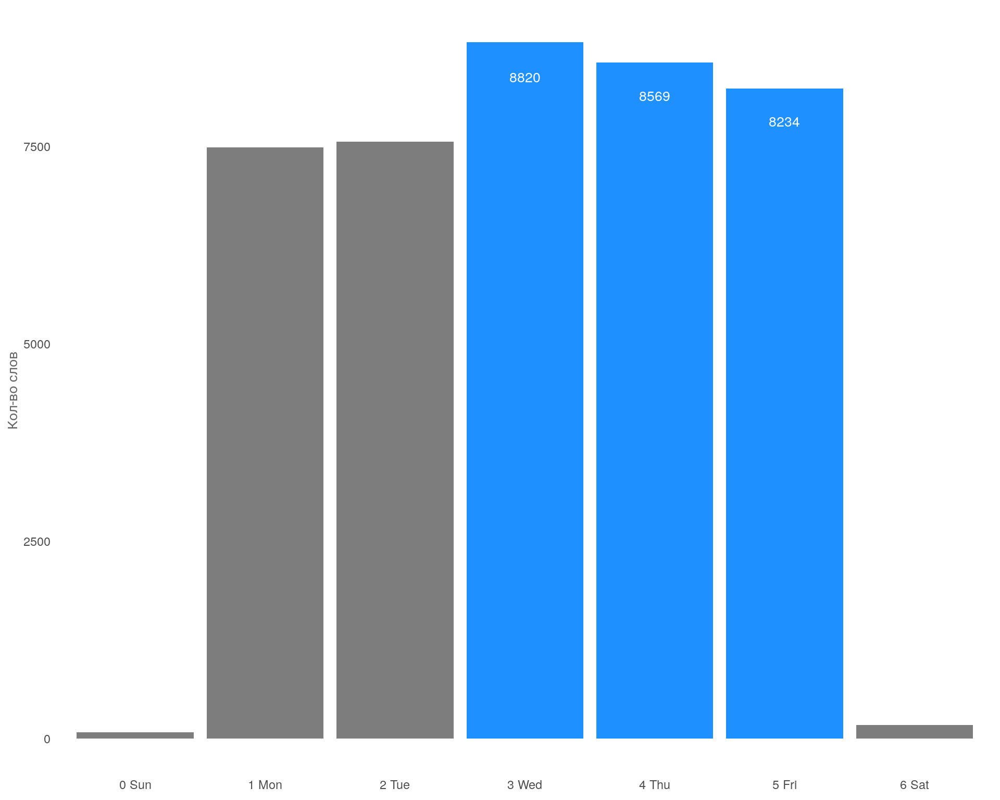
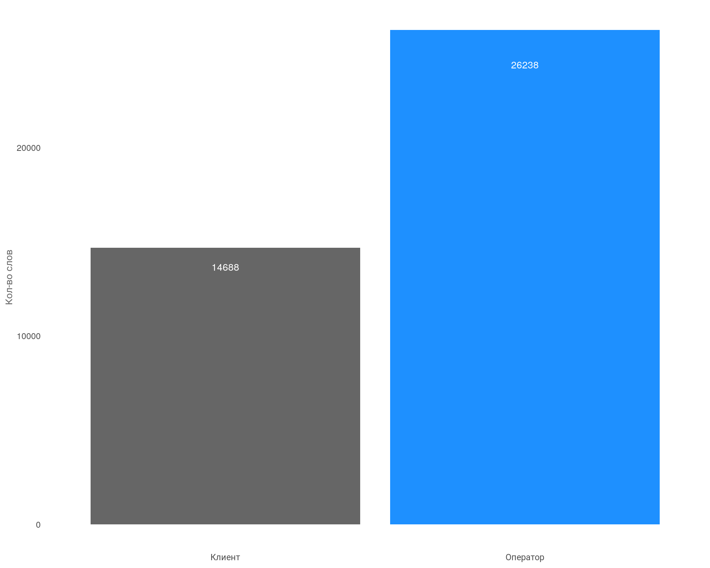
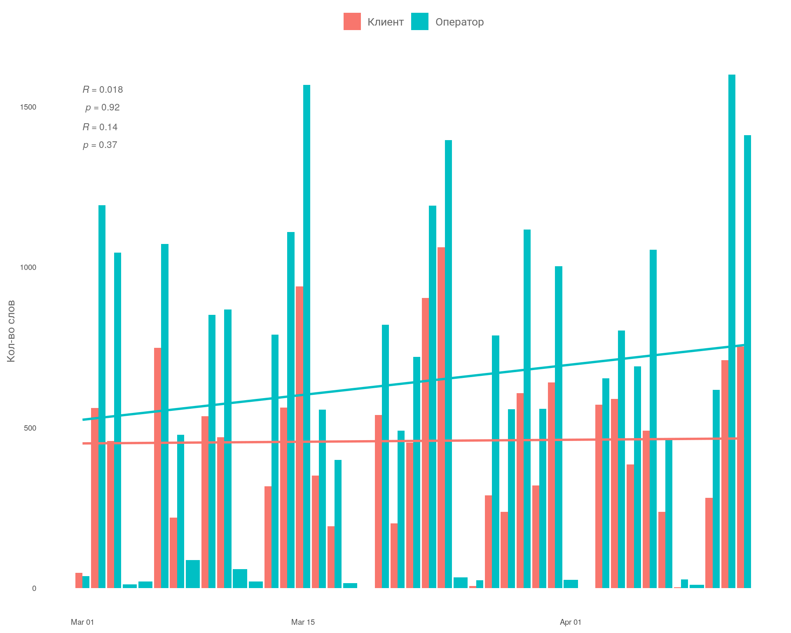
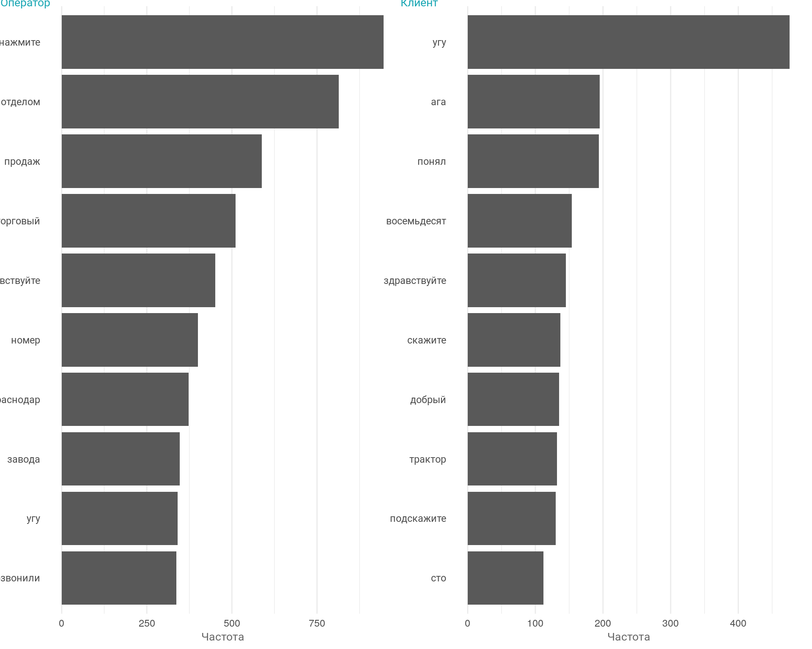
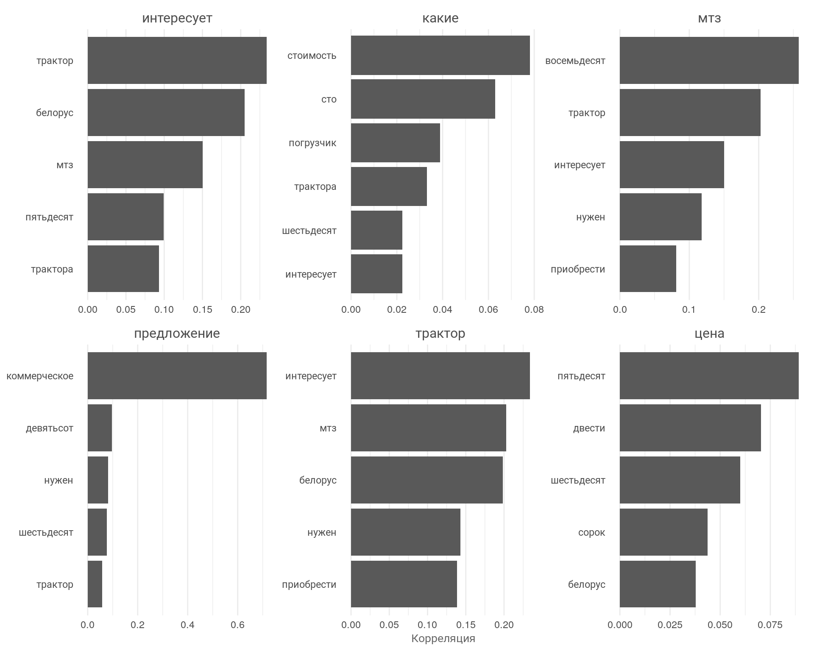

Анализ входящих звонков
Цель анализа
Главная цель — понять качество входящих звонков из платной выдачи поисковых систем (рекламные кампании в Я.Директ) без привязки к CRM системе для косвенной оценки эффективности рекламных кампаний.
Основная гипотеза — проведя текстовый анализ мы увидим, с каким интересом (интентом, потребностью, намерением) обращаются клиенты в компанию. Если потребность соответствует деятельности компании, то трафик можно считать релевантным и качественным, а значит рекламные кампании работает правильно, т.е. привлекает целевую аудиторию. Таким образом наша нулевая и альтернативные гипотезы звучат следующим образом:
- \(H_0\) — разницы между интентом входящих звонков из платного канала и деятельностью компании нет. Это хороший исход.
- \(A\) — разница есть, а значит трафик не релевантный и рекламные кампании привлекают не целевую аудиторию.
Важно отметить, что доказывать релевантность платного трафика будем через сравнение с органическим трафиком (трафик из поисковых систем), так как органический трафик считается эталоном по качеству входящих звонков, при условии, что мы принимает тот факт, что SEO оптимизация сайта сделана на высоком уровне.
Вводные данные
- Рекламная кампания дается в поисковой системе Яндекс по направлению продажи тракторов.
- Анализируемый период с 10.03.2023 по 12.04.2023.
- За период зафиксировано \(369\) звонков с платных и органических каналов.
- Файл выгрузка с транскрибацией входящих звонков содержит \(14\ 623\) строк.
Загрузка и подготовка данных
Загрузим таблицу с данными, которая содержит транскрибацию входящих звонков.
Далее преобразуем таблицу для дальнейшего анализа.
- уберем стоп-слова и служебные части речи
- проведем токенизацию слов для дальнейшего анализа
- приведем столбцы в нужный формат
В итоге получили фрейм данных в котором фразы были разбиты на слова, при этом очищенный от стоп слов (предлоги, союзы, знаки препинания и т.п.)
Анализ активности во времени по кол-ву слов
Рассмотрим кол-во слов распределенных на временном промежутке.
График: Активность по дням
Стат данные к графику.
| mn | md | sd | se | max | min | delta | total |
|---|---|---|---|---|---|---|---|
| 998 | 1076 | 778 | 121 | 2508 | 10 | 2498 | 40926 |
График: Активность по неделям

Вывод
На графике видим волнообразную структуру данных, которая согласуется с днями недели. Виден четкий тренд на увеличение кол-ва слов (синяя линия), об этом также свидетельствует положительный коэффициент корреляции \(R=0.14\). Это может говорить о том, что кол-во звонков со временем поступает больше.
Также по красной линии тренда видно, что пик по кол-ву слов пришёлся на март и на вторую неделю апреля.
В среднем за период в разговоре и у клиента и у оператора употребляется от \(220\) до \(1\ 776\) слов, в среднем \(998\). Всего за анализируемый период было произнесено почти \(41\ 000\) слов
Что касается дней недели. Самые активные недели были \(11\) и \(12\) недели марта. При этом отметим что \(13\) неделя апреля пришлась на субботу и воскресенье, а так как в эти дни активности почти нет, то на графике также их не будет.
Рассмотрим самые активные дни недели с точки зрения использования слов.
График: Самые активные дни недели

Вывод
Самые активные дни недели с точки зрения употребления слов со среды по пятницу. Что согласуется с кол-вом поступающих звонков на эти дни. Самые не активные дни суббота и воскресенье.
Сегментный анализ
Рассмотрим кол-во употребляемых слов в разрезе «оператор и клиент».
График: сегменты в разрезе оператор / клиент

Вывод
На графике видно, что оператор использует почти в два раза больше слов, чем клиент. Возможно разница связан с работой автоответчка, а также с использованием операторами уточняющих слов.
График: Тренд по словам по оператору и клиенту

Вывод
Наблюдаем положительный рост по кол-ву слов у оператора. У клиентов кол-во слов практически не изменяется. С учетом роста повторных звонков, возможно, приходится уделять больше внимание клиенту, который находится ближе к этапу сделки.
График: Кол-во слов в разрезе каналов по параметру «повторный»
Вывод
Видно, что кол-во слов при повторном и первичном звонке отличается. Клиент и оператор используют больше слов при первичном звонке, при этом это на зависит от канала из которого пришел клиент, пропорция соблюдается.
Анализ частотности слов
Данный анализ покажет какие ключевые слова используются наиболее часто в разговоре в различных срезах. Это даст первое понимание о совпадении интента клиентов с деятельностью компании.
Рассмотрим частотность слов в разрезе оператор клиент.
График: Частотность слов в разрезе оператор - клиент

Вывод
У оператора мы видим ответ автоответчика, что объясняет почему оператор употребляет в два раза больше слов чем клиент. У клиента видим слова связанные с деятельностью компании. Первый признак совпадения интента.
Сравним ключевые слова у клиентов из органического и платного трафика. Сравниваем именно с органическим трафиком потому что считаем, что из данного канала приходят наиболее релевантные клиенты по отношению к деятельности компании.
Предварительно уберем из данных ряд мусорных слов, которые не несут смысловой нагрузки. В таблице приведен пример таких слов.
Таблица: Минус-слова
| Слово |
|---|
| ага |
| угу |
| понял |
| скажите |
| подскажите |
График: Частотность слов по клиентам в разрезе каналов
Вывод
Визуально можно увидеть, что по частотности слов у клиентов из органического и платного трафика слова практически совпадают. Интересуют в первую очередь трактора, при этом в платном канале также интересуют погрузчики и оборудование. Клиенты интересуются наличием и запрашивают коммерческое предложение. Также в платном канале интересуются лизингом.
Анализ ассоциированности ключевых слов
Однако, нас интересует не только кол-во слов, но и как они взаимосвязаны между собой. Найдем наиболее соотносимые (ассоциированные) ключевые слова через коэффициент \(phi\). Данный Коэффициент эквивалентен корреляции Пирсона.
График: Пример ассоциативности ключевых слов

На графике мы видим ключевые слова и ассоциированные слова на оси \(y\), а также видна сила корреляции по оси \(x\). Таким образом можно провести анализ запросов входящих звонков и дополнительно проверить, чем интересуются клиенты. В данном случаи запросы клиентов полностью совпадают с деятельностью компании.
Также можно построить граф, где будут отображены кластеры слов и их взаимосвязь, что позволит взглянуть на картину с еще большего масштаба.
Граф: Кластеры и ассоциативность между словами
Вывод
На графе отображены взаимосвязи с силой выше \(0,06\) иначе граф получается не разборчив. На графе можно увидеть кластеры и наиболее сильные взаимосвязи. Например, пара «коммерческое предложение» соединена темной толстой линией. Это означает сильную ассоциативную взаимосвязь между словами.
Используя графы и таблицы можно найти главные интересы клиентов, что будет полезно для маркетологов, менеджеров по продажам и трафик менеджеров.
Корреляционный анализ каналов
Проведем корреляционный анализ, чтобы убедиться наверняка с точки зрения статистики, что запросы у клиентов из разных каналов совпадают.
График: Сравнение частотности слов у клиентов в разрезе каналов
Вывод
Слова, близкие к пунктирной линии на графиках, имеют сходные частоты в обоих наборах текстов, в то время как те, которые находятся далеко от линии, встречаются чаще в одном наборе текстов, чем в другом.
Например, слова «банк», «инн», «краснодаре», «погрузчик» встречаются чаще в платном канале (СРС), тогда как слова «доставка», «беларус», «вал» встречаются чаще в органическом трафике.
Слова которые употребляются в обоих каналах часто «трактор», «восемьдесят», «коммерческое», «предложение».
Обратим внимание, что множество слов распространяются на более низкие частоты (облако точек сосредоточено в нижнем левом углу графика). Эта характеристика указывают на то, что клиенты из обеих каналов используют большой объём низкочастотных слов при общении.
Количественно оценим, насколько похожи и различаются эти наборы частот слов, используя корреляционный тест.
Значение корреляции
[1] “corr: 0.891777092174326”
Значение p-value
[1] “p-value: 5.74199052548605e-254”
Вывод
Тест показывает, что частота употребления слов сильно коррелирует между каналами. На это указывает коэффициент корреляции \(cor≈0,9\) (при норме \(0,6\) и чем ближе к \(1\), тем выше корреляция). При этом уровень достоверности теста высокий и явно ниже \(0,05\) на это указывает \(p-value\) с \(16\) знаками после запятой. Т.е. клиенты из данных каналов используют сопоставимый по объему и смыслу слова.
Также мы можем доказать схожесть набора текстовых данных через Закон Ципфа.
Закон Ципфа
Закон Ципфа (Zipf’s law) – имперический закон, согласно которому частота появления слова обратно пропорциональна его рангу. Т.е. чем реже встречается слово в наборе данных, тем выше ранг. Вычисляете по формуле:
\[freq(r)=A \times N \times r^{-1}\]
- \(freq(r)\) – частотность слова с рангом \(r\)
- \(r\) — ранг слова в списке слов, упорядоченных по убыванию частоты
- \(N\) – общее количество слов или символов в тексте
- \(A\) – константа, которая зависит от конкретного текста и языка, обычно \(0.1\)
Формула говорит, что если ранг слова увеличивается в два раза, то его частота встречаемости уменьшается в два раза. С другой стороны, чем меньше ранг слова, тем выше его частота встречаемости.
Рассмотрим как распределились слова по частотности в разрезе каналов (переменная \(TF\) по оси \(x\)).
График: Распределение частотности слов в разрезе каналов
Вывод
На графике, в обоих наборах данных видим длинные хвосты т.е. чрезвычайно редкие слова. График демонстрирует схожее распределение для каналов, с большим количеством слов, которые встречаются редко, и меньшим количеством слов, которые встречаются часто.
Закон Ципфа визуализируется путем построения ранга по оси \(x\) и частоты членов по оси \(y\) в логарифмических масштабах. При построении графика таким образом, обратно пропорциональная зависимость будет иметь постоянный отрицательный наклон.
График: Закон Ципфа
Вывод
Видим на графике, что оба текстовых набора данных по каналам очень похожи между собой и что зависимость между рангом и частотой имеет отрицательный наклон (чем выше ранг, тем ниже частотность \(TF\)).
Особое внимание на пунктирную линию. Это значение степенного закона средней части набора данных для слов с рангом от \(10\) до \(500\). Мы видим, что основная масса слов лежит на пунктирной линии, при этом обе линии накладываются друг на друга. Что говорит о высокой схожести набора данных. Это доказывает, что обращения из платного канала схожи с обращениями из органической выдачи.
Вывод по текстовому анализу
С помощью двух методов анализа (корреляционный анализ и закон Ципфа), мы доказали схожесть текстовых набора данных между платным и органическим каналами. Таким образом принимаем нашу нулевую гипотезу о том, что разницы между интеном во входящих звонках из платного канала и входящих звонках из органического трафика НЕТ. Т.е. клиенты из обеих каналов обращаются в компанию с одними и теми же интересами.
Принимаем гипотезу:
- H0 — разницы между интентом входящих звонков из платного канала и деятельностью компании нет.
Данный анализ применим и для других источников трафика, главное условие это наличие качественного органического трафика, либо набора ключевых слов (семантическое ядро), которые описывают деятельность компании.